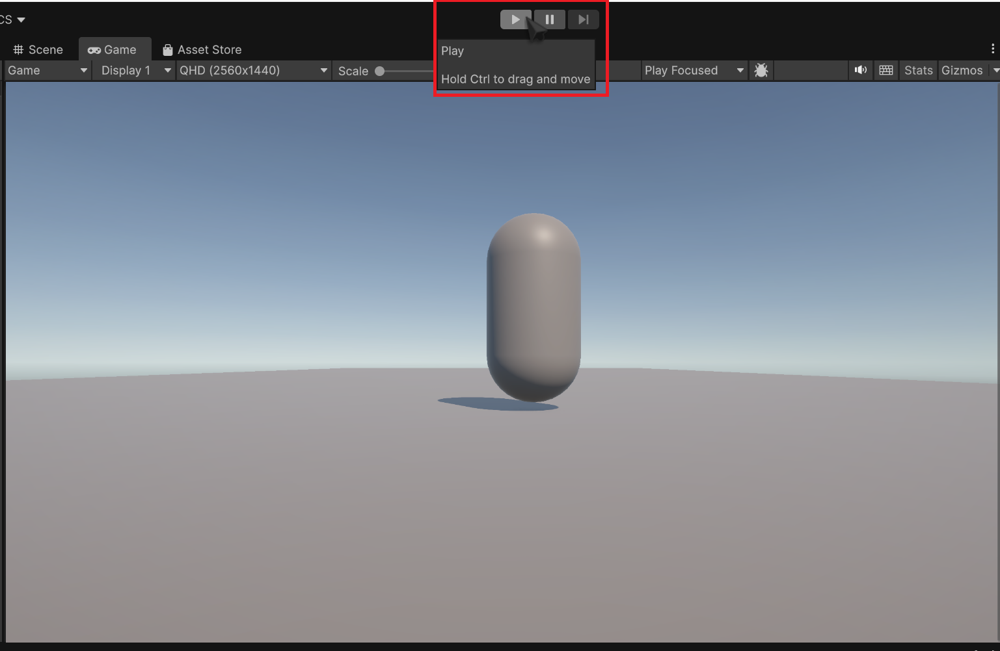
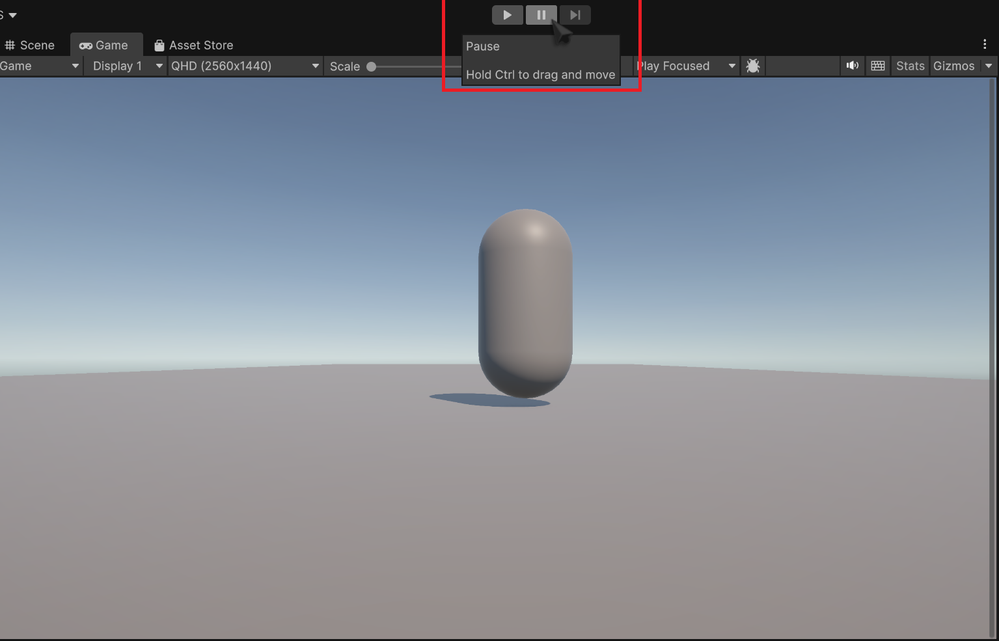

Creating a Camera Controller Script
In this step, We'll create a simple C# script for using the mouse to look around. while simple, this script will have an easily modifyable sensitivity parameter, as well as clamping the rotation so players can't make the camera look inside the capsule.
-
Select your Main Camera and click Add Component.
-
Type in what you want to name your script.
We'll use mouselook. click New Script, and hit enter. Save the script in the same place as your movement Script, and open it up in visual studio. You should be met with this:
-
Add these lines above
These are like packages in python. they expand Unity's capabilities.using UnityEngine;: -
Add the following variables after
public class mouseLooking : MonoBehaviour:mouselook.cs Variables in C#
Unlike Python, C# is statically typed. This means the datatype of the variable must be explicitly stated when declaring it. Datatypes are relatively simple, once you get the basics, but coming from Python they can be a little confusing. take the mouseSensitivity variable for example:
public float mouseSensitivity = 100f;public - visibility modifier. think of this as a way of explicitly defining scope. public means it's accessible externally, private means it's not, and leaving it out implies protected, a pseudo-halfway point.
float - this is the data type. this means that mouseSensitivity is a floating-point 32-bit number.
100f - this is the value we're assigning to mouseSensitivity. the f explicitly tells the compiler to treat it as a float.
Another key aspect of C# is that you always end a statement with a semicolon, hence the ;.
don't worry about making global variables. global variables are a rarity here, and as long as you declare your vars inside the {} after the class declaration, it's not global.
forgetting the Semicolon WILL cause your code not to compile!
-
Add inside the void Start method:
What this will do is tell the unity project to lock your cursor to the center of the screen. -
Press
Ctrl + Sto save your work and then tab back into Unity.Unity will compile your new script, and then give you a warning in the console. Ignore it for now, we'll address it later. You should see two extra fields that share the names of the two public methods we declared.
-
Press on the play button on the top of the screen.

Check that your cursor does lock to the Game window (it will dissapear), and when confirmed, press
Escto free your cursor and press the stop button.
Testing
Testing is a critical part of game development, so test your work often.
-
add the following to our script inside
void update():mouselook.cs This tells unity to start monitoring our mouse movement on both axes. we then multiply by our sensitivity, and then add Time.deltaTime to normalize it.
-
Add these lines, inside
Update()again:this will start recording our Xrotation from mouseY, and then use themouselook.cs Mathf.Clamp()to clamp our rotations to a 180 degree field of view. -
Add these in
Update():this will access the transform of the playerBody object, and use the transform'smouselook.cs .rotate()function to rotate the playerBody, and by extension, the camera. -
Go back into unity, let your code compile, and test your code!
in case something doesn't work, you can check against the full script:
Conclusion
In this task, you learned how to:
- parent an Object to another object
- lock the mouse cursor to the screen using cursor.lockState
- access mouse movement data through MouseX/MouseY
- use the .Clamp() function to clamp rotations
- use an object's Transform component to control it's rotation